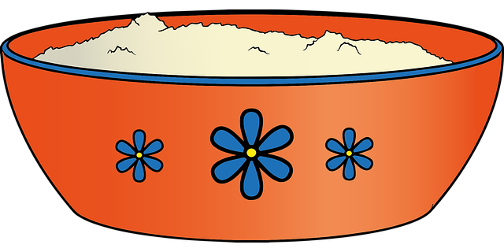

Сайт посвящен тематики похудения, у нас вы найдете различные виды диет, рекомендации по питанию и многое другое...
А еще есть несколько приложений: Индекс массы тела, который показывает насколько в норме Ваш вес, а также калькулятор калорий
Диеты для похудения
Совет: При наличии склонности к запорам нужно очистить кишечник перед диетой. Для этого вовсе не обязательно делать клизму. Можно просто принять на ночь слабительное средство растительного происхождения. Средство поможет вывести накопившиеся токсины, в результате полезные вещества и витамины будут лучше усваиваться организмом.
Любимая
Описание диеты
Диета “Любимая” поможет вам добиться результата всего за 7 дней! Читайте отзывы, смотрите результаты людей, и сбросьте до 10 кг с Любимой диетой всего за неделю!
Ключевая суть диеты любимая проста и заключается в потреблении каждый день определенного вида продуктов низкой калорийности при полном отсутствии жиров. При этом организм испытывает дефицит энергии и начинает ее извлекать путем расщепления жировых клеток, накопленных ранее. Вот за счет этого процесса и происходит снижение массы тела.
Расписание диеты Любимая:
- Первый день – питьевой. Употреблять можно только напитки и жидкую пищу без твердой основы (мясо, картофель, овощи). Упор делается на обычную воду комнатной температуры
- Второй – овощной. В ход пускают все, что есть в холодильнике. Наиболее популярными остаются помидоры, огурцы, баклажаны, кабачки, капуста. Можно варить, тушить блюда, готовить салаты
- Третий день – питьевой. Полностью повторяет меню первого
- Четвертые сутки – фруктовые. Разрешается кушать яблоки, груши, апельсины, бананы в любых количествах. Рекомендуется есть каждые 2-3 часа для предотвращения сильного чувства голода
- Пятый день – белковый. Здесь уже можно употреблять мясо и рыбу. Предпочтение лучше отдавать птице (курятина, индейка) без кожуры. Из рыбы хорошо себя зарекомендовали нежирные сорта (треска, окунь и другие). Также прекрасно подойдут морепродукты. В них много йода и других микроэлементов
- Шестой день – питьевой
- Седьмые сутки предполагают возврат к обычному рациону. Разрешается кушать все, что и в обычной обстановке. Главное – не набрасываться на еду, а употреблять пишу небольшими порциями
Плюсы и Минусы диеты Любимая
Преимущества диеты:
- Высокая эффективность. За 1 неделю можно потерять до 10 кг лишнего веса
- Относительная безопасность. В отличие от монодиет, данный способ похудения обеспечивает организм разнообразными питательными веществами, что способствует его нормальному функционированию
- Тренировка силы воли и дисциплины
Недостатки диеты:
- Нагрузка на организм. Воздержание от тех или иных важных компонентов обычного рациона человека всегда негативно сказывается на состоянии отдельных органов и систем
- Замедление обмена веществ. В связи со значительным ограничением объемов пищи, тело перестраивается под экономный режим расходования энергии. Ему нужно определенное время для восстановления
Противопоказания!
- Беременность и период кормления грудью
- Наличие органических заболеваний ЖКТ (гастрит, язва, колит)
- Беременность и период кормления грудью
- Общее плохое состояние человека
- Гипертоническая болезнь или диабет
- Послеоперационный период
- Почечная или печеночная недостаточность
Гречневая диета
Описание диеты
При ее строгом соблюдении за неделю можно похудеть на 3-4 кг. Гречка настоящая сокровищница микроэлементов. В ней содержатся фосфор, медь, цинк и селен, железо, марганец, калий и магний, а также витамины группы В. Благодаря такому составу похудение проходит без вреда для кожи, зубов и волос. Помимо похудения, при данном методе питания, повысится иммунитет, нормализуется давление и уровень холестерина в крови, укрепится сердечно-сосудистая система.
Расписание Гречневой диеты на 7 дней:
- Первый день – Завтрак: запаренный кипятком стакан гречки (70 гр). Перекус 1: стакан зеленого чая. Обед: гречка (100гр) с кефиром и 25 гр кураги. Перекус 2: травяной чай без сахара. Ужин: гречка (50 гр) запаренная крутым кипятком (в течение 1 часа).
- Второй – Завтрак: запаренный кипятком стакан гречки (80 гр) и 30 гр чернослива Перекус 1: стакан зеленого чая. Обед: гречка (100гр) с кефиром и 25 гр сушеного яблока. Перекус 2: травяной чай без сахара. Ужин: гречка (60 гр) запаренная крутым кипятком.
- Третий день – Завтрак: запаренный кипятком стакан гречки (70 гр). Перекус 1: стакан зеленого чая с мятой. Обед: гречка (100гр) с кефиром и 25 гр кураги. Перекус 2: травяной чай без сахара. Ужин: гречка (50 гр) запаренная крутым кипятком и 1 зеленое яблоко.
- Четвертые сутки – Завтрак: запаренный кипятком стакан гречки (100 гр) с добавлением рубленой петрушки. Перекус 1: стакан зеленого чая. Обед: гречка (100гр) с кефиром и 30 гр чернослива. Перекус 2: стакан обезжиренного кефира. Ужин: гречка (80 гр) запаренная крутым кипятком.
- Пятый день – Завтрак: стакан гречки (120 гр) с нежирным кефиром. Перекус 1: стакан зеленого чая с чабрецом. Обед: гречка (150 гр) с кефиром и 1 зеленое яблоко. Перекус 2: травяной чай без сахара. Ужин: гречка (60 гр) запаренная кипятком и рубленной зеленью кинзы.
- Шестой день – Завтрак: запаренный кипятком стакан гречки (70 гр). Перекус 1: стакан зеленого чая. Обед: гречка (100гр) с кефиром и 25 гр кураги. Перекус 2: травяной чай без сахара. Ужин: гречка (50 гр) запаренная крутым кипятком.
- Седьмые сутки – Завтрак: запаренный кипятком стакан гречки (70 гр). Перекус 1: стакан зеленого чая. Обед: гречка (150гр) с кефиром и петрушкой. Перекус 2: стакан обезжиренного кефира. Ужин: гречка (50 гр) с кефиром и 30 гр кураги.
Плюсы и Минусы Гречневой диеты
Преимущества диеты:
- Возможность за неделю сбросить 5-6 кг
- Очищение организма
- Чувство сытости после приема пищи
- Неограниченная возможность в потреблении воды
- Отсутствие больших финансовых возможностей
- Нет необходимости длительное время готовить
- Быстрый и простой рецепт
- Стабильный результат в похудении
Недостатки диеты:
- Запрещено употреблять параллельно другие продукты
- Ограниченная калорийность, которая может приводить к слабосте
- Постоянная психологическая зависимость от других продуктов
- Стрессовое состояние на диете
Противопоказания!
- Гастрит
- Сахарный диабет
- Тяжелые обменные заболевания
- Заболевания сердечнососудистой системы
- Беременность
- Кормление грудью
- Климакс
Средиземноморская диета
Описание диеты
Эта единственная диета, одобренная фондом ЮНЕСКО, признанная действительно безопасной системой похудения. Напротив, она способна улучшить общее состояние организма, не противоречит канонам правильного питания, но имеет свой подход к составлению рациона. В средиземноморской классической диете много таких продуктов, которые запрещены другими системами похудения.
Суть диеты в ежедневном употреблении той пищи, которая присутствуют в рационе жителей средиземноморья. Среди испанцев, итальянцев, ливийцев, марокканцев редко встречаются полные и тучные люди. В этих странах низкий процент смертности из-за онкологических и сердечно-сосудистых заболеваний. Они лидируют по продолжительности жизни местного населения.
Расписание Средиземноморской диеты:
| Дни | Завтрак | Перекус | Обед | Перекус | Ужин |
|---|---|---|---|---|---|
| День 1 | Овсяная каша на молоке с фруктами. Освежающий фруктовый смузи | Стакан кефира или натурального йогурта | Сэндвич с тунцом. Салат из черри. 1 любой фрукт на выбор | 30 гр орешков на ваш выбор | Салат из авокадо, салата айсберг, черри и сыра (фета или мацарелла) |
| День 2 | Фруктовый салат, в качестве заправки можно использовать йогурт или кефир без сахара | 1 фрукт на выбор | Ризотто с овощами. 1 фрукт на выбор | Бутерброд из цельнозернового хлеба с сыром и ломтиком помидора | Салат с курицей «Летний». 1 кусочек цельнозернового хлеба |
| День 3 | Сырники или творожная запеканка. Стакан сока | Чай с 2-мя овсяными печеньями | Овощное рагу с рисом. Пару кусочков сыра | 1 фрукт на выбор | Рыба запеченная в духовке с сыром. Салат из овощей |
| День 4 | Омлет из 2 яичных белков, цельнозерновой хлебец. 1 фрукт | 1 овсяный маффин с миндалем | Паста с морепродуктами или рыбой. 1 помидор | 30 гр сухофруктов на ваш выбор | Простой салат с рукколой |
| День 5 | 1 отваренное вкрутую яйцо, тост с сыром и ломтиком помидора | 1 фрукт на выбор | Овощной суп. Салат из помидоров и сыра. Стакан сока | 1 фрукт на выбор | Баклажаны запеченные с сыром, помидорами и грибами |
| День 6 | Свежие ягоды или фрукты с натуральным йогуртом | 1 фрукт на выбор | Рагу из овощей с рыбой, приготовленной на пару | Стакан сока, бутерброд с сыром | Средиземноморский салат с пастой |
| День 7 | Кускус на молоке с сухофруктами | 1 овсяный маффин с миндалем | Куриное филе запеченное в духовке. Салат из овощей | Фрукт на выбор или горсть орешков | Басмати-салат. Цельнозерновой хлебец. Сок |
Плюсы и Минусы Средиземноморской диеты
Преимущества диеты:
- Не требует больших финансовых затрат, доступна каждому. Большинство продуктов без труда можно купить в супермаркете или заменить практически равноценными (например, тунец – лососем или горбушей, авокадо – несладкой грушей, папайю – персиком)
- Сбалансированная диета, позволяет сохранить не только здоровье, но и красоту, продлить молодость. Привычка правильно питаться помогает поддерживать вес в норме, т.е. не набирать лишних килограммов
- Гуманная диета, широкий выбор разрешённых продуктов, позволяющий готовить вкусные и разнообразные блюда
- Отлично адаптируется к традициям отечественной кухни. Количество непривычных для нашего организма продуктов минимально
Недостатки диеты:
- Не способствует быстрому похудению и не подходит для борьбы с ожирением
- Сладкоежкам, привыкшим пить чай с тортиками и пирожными, будет нелегко от этого отказаться. Хотя практика показывает, что привычка есть на десерт фрукты формируется достаточно быстро, к тому же иногда себя можно баловать и такими вкусностями, как: панна кота, тирамису, семифредо, крокембуш, клафути, туррон, чуррос (кстати, будет повод освоить приготовление нового блюда или сходить в ресторан)
Противопоказания!
- Высокая степень одирения
- Наличие органических заболеваний ЖКТ (гастрит, язва, колит)
- Аллергия на морепродукты
Вегетрарианская диета
Описание диеты
Вегетарианская диета разнообразна, она вкусная и сбалансированная. Находиться на такой системе питания допустимо длительное время: отсутствие вреда для здоровья, положительное воздействие на организм и исключение риска возвращения потерянных килограммов – таковы важные характеристики диеты.
В наше время уже никто не смотрит с опаской и удивлением на вегетарианцев, а многие даже завидуют этим смелым людям, которые нашли в себе силу отказаться от пищи животного происхождения ради крепкого здоровья и иммунитета. Исследования показали, что питание на растительных и молочных белках, жирах, витаминах и аминокислотах является достаточным для активной жизнедеятельности, одновременно с этим понижая уровень холестерина в крови.
Расписание Вегетарианской диеты:
| Дни | Завтрак | Обед | Ужин |
|---|---|---|---|
| День 1 | Отварная гречневая или пшенная каша, можно добавить мед или сухофрукты. Зеленый чай с лимоном | Суп из овощей на овощном бульоне со свежей зеленью, салат из листьев шпианат с помидорами и редисом с добавлением растительного масла и пара кусочков ржаного подсушенного хлеба | Порция тушеных овощей с небольшим количеством морской соли или специй, стакан несладкого кефира, один большой фрукт |
| День 2 | Отварной рис с порцией зеленого салата с соком лимона, напиток из цикория с медом. Два сладких фрукта. | 3 картофелины, сваренные в мундире, большая порция свежего салата с маслом, пара бутербродов с авокадо, помидорами, зеленью и оливками. | Три поджаренных тоста из ржаного хлеба, кабачковая икра со свежим огурцом. |
| День 3 | Каша на воде из любой крупы или их смеси, зеленый чай, пара тостов с медом. | Овощной бульон с несколькими подсушенными тостами, салат из отварных овощей с маслом и соком лимона, зелень. Два больших яблока. | Тушеные или отварные овощи, маринованные грибы. Перед сном несладкий йогурт с грушей. |
| День 4 | Рис, приготовленный с овощами на пару, с растительным маслом и грибами. Два банана и горсть слив. | Запеканка из овощей с сыром, салат из шпината с добавлением семян, помидоров и огурцов с зеленью. | Три поджаренных тоста из ржаного хлеба, овощная икра, салат из редиса со свежим огурцом. |
| День 5 | Кускус малом, большая тарелка свежего салата с растительным маслом, зеленый или ромашковый чай. | Овощной бульон, пара бутербродов с тофу, паровая овощная смесь со свежей зеленью. | Небольшая порция каши, сваренной на воде, с порцией салата. |
| День 6 | Фруктовый салат с орешками и медом, пара ржаных тостов. | Тушеные овощи, запеканка из риса с грибами, компот из смеси ягод и фруктов. | Макароны из твердых сортов злаков, салат, стакан морса. |
| День 7 | Оладьи с медом, зеленый чай, две груши. | Запеканка из овощей, овощной салат, сок из двух апельсинов. | Отварная крупа на воде с кусочком тофу, два банана. Травяной чай с натуральным медом. |
Плюсы и Минусы Вегетарианской диеты
Преимущества диеты:
- Потребление большого количества клетчатки с овощами и фруктами обеспечит организм жизненной силой, содержащейся в растительных продуктах. Клетчатка ускорит работу желудочно-кишечного тракта, выводя шлаки и продукты обмена. Итог: ткани и системы органов очищаются и работаю продуктивнее
- Увеличение продолжительности жизни. За счет исключения жирных продуктов замедляется процесс образования холестерина на стенках сосудов. Они остаются чистыми и эластичными, не возникает риска развития сердечнососудистых болезней. Они являются частой причиной смерти современного человека
- С продуктами растительного происхождения организм получает большое количество витаминов, минеральных веществ и жизненной энергии
Недостатки диеты:
- Отсутствие в рационе некоторых витаминов, веществ, и элементов, которые доступны лишь в животной пище
- Вегетарианская пища углеводная, но бедна жирами и белками, которые следует обязательно получать из молочных продуктов
- Вегетарианская пища углеводная, но бедна жирами и белками, которые следует обязательно получать из молочных продуктов
Противопоказания!
Также у диеты существуют противопоказания. Диетологи не советуют садиться на нее беременным женщинам и кормящим матерям, детям и пожилым людям, спортсменам, которым необходимы нутриенты для улучшения показателей. Также следует учитывать, что нехватка в организме «животного» витамина В 12 может привести к сложным психическим расстройствам, падению остроты зрения.
В случае возникновения таких побочных результатов, как раздражительность, нервозность, слабость, упадок сил, отек конечностей, проблемы с ЖКТ и пищеварением, головокружение обратитесь к врачу и прекратите диету.
Кефирная диета
Описание диеты
Кефир — чрезвычайно полезный кисломолочный напиток, его часто назначают при проблемах с желудочно-кишечным трактом (ЖКТ), он быстро восстанавливает баланс микрофлоры и помогает лучше усваиваться «тяжелым» продуктам. Благодаря своей низкой калорийности и способности ослабить чувство голода, кефир нередко применяется в диетах.
Состав продукта является главным показателем его эффективности. Благодаря полезным бактериям, кефир обладает большим запасом питательных веществ, витаминов и микроэлементов. Они способствуют ускорению метаболизма, выведению из организма шлаков и токсинов, а также расщеплению жиров.
Расписание недельной Кефирной диеты:
Расписния данного ниже необщодимо придерживаться на протяжении одной недели.
- Утро — стакан кефира
- Первый завтрак — овощная смесь, заправленная оливковым маслом
- Второй завтрак — куриная грудка, приготовленная на пару (80 грамм)
- Полдник — одно среднее яблоко
- Обед — гречневая каша с кефиром. При варке гречки нельзя добавлять в нее соль и масло
- Перекус — яйцо, сваренное вкрутую
- Ужин — 100 гр сухофруктов, исключение составляет изюм
- Ужин — 100 гр сухофруктов, исключение составляет изюм
- Вечером — стакан кефира
Все дни без исключения необходимо пить чистую воду без газа, лучше выпивать стакан за 30 минут до планируемой трапезы. Диета хороша тем, что помогает сбросить до 7 килограмм. Конечно, чтобы итог Вас порадовал нужно добавит умеренную физическую нагрузку и повторить курс через месяц. Тогда результат сохранится надолго.
Плюсы и Минусы Кефирной диеты
Преимущества диеты:
- Низкая калорийность
- Низкий уровень содержания углеводов
- Малое количество жиров
- Благотворно влияет на сердечнососудистую систему
- Хорошо переносится без яркого чувства голода
- Выводит лишнюю жидкость из организма и предотвращает отечность
- Улучшение обмена веществ
- Очищение организма от шлаков и токсинов
- Профилактика запоров
- Нормализация микрофлоры кишечника
Недостатки диеты:
- Слабость и головокружение
- Упадок сил
- Мигрени
- Расстройства пищеварения, тошнота, диарея
- Человек испытывает серьезную психологическую нагрузку. Возможны нервные срывы
Противопоказания!
Кефирная диета противопоказана людям с хроническими заболеваниями желудка, дисфункцией кишечника, язвой. А также при сахарном диабете, нарушении работы почек, проблемах с сердцем, аллергии на лактозу. Ни в коем случае садиться на кефирную диету нельзя беременным и кормящим женщинам. Воздержаться следует и детям младше 16 лет.
